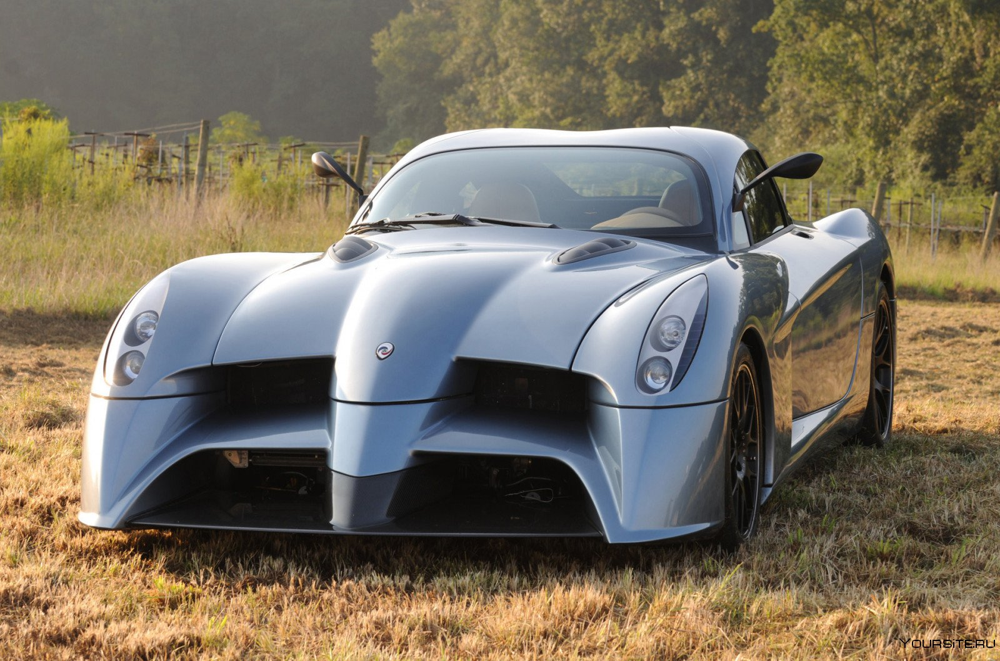

Механическое транспортное средство, используемое обычно для перевозки по дорогам людей или грузов или для буксировки по дорогам транспортных средств, используемых для перевозки людей или грузов. Этот термин охватывает троллейбусы, то есть нерельсовые транспортные средства, соединённые с электрическим проводом; он не охватывает такие транспортные средства, как сельскохозяйственные тракторы, использование которых для перевозки людей или грузов является лишь вспомогательной функцией.